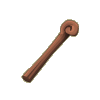
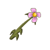
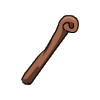

Menu barbok'you

Les Batons
| Niveau 1 | Bâton de l'initié | |||
|---|---|---|---|---|
| # | Recettes : | Effets : | Caractéristiques : | Conditions : |
|  | Dommages : 1 à 4 (neutre) Initiative : 10 |
PA : 4 Portée : 1 Bonus CC : +5 Critique : 1/50 Echec : 1/50 |
||
| Description : Cette arme d'apparence rudimentaire vous donnera l'impression de savoir vous battre. | ||||
| Niveau 2 | Bâton de Boisaille | |||
|---|---|---|---|---|
| # | Recettes : | Effets : | Caractéristiques : | Conditions : |
 |
2x Bois de Frêne 3x Bois de Châtaignier |
Dommages : 3 à 7 (neutre) Force : 1 |
PA : 4 Portée : 1 Bonus CC : +5 Critique : 1/50 Echec : 1/50 |
Intelligence > 4 |
| Description : Bâton de simple facture, il ne fera pas de votre héros une légende. | ||||
| Niveau 7 | Grand Bâton de Boisaille | |||
|---|---|---|---|---|
| # | Recettes : | Effets : | Caractéristiques : | Conditions : |
 |
4x Bois de Châtaignier 3x Bois de Frêne |
Dommages : 5 à 9 (neutre) Force : 1 |
PA : 4 Portée : 1 Bonus CC : +5 Critique : 1/50 Echec : 1/50 |
Intelligence > 7 |
| Description : Bâton de simple facture, il ne fera pas de votre héros une légende. | ||||
| Niveau 9 | Puissant Bâton de Boisaille | |||
|---|---|---|---|---|
| # | Recettes : | Effets : | Caractéristiques : | Conditions : |
 |
5x Bois de Châtaignier 4x Bois de Frêne |
Dommages : 7 à 11 (neutre) Force : 1 |
PA : 4 Portée : 1 Bonus CC : +5 Critique : 1/50 Echec : 1/50 |
Intelligence > 9 |
| Description : Bâton de simple facture, il ne fera pas de votre héros une légende. | ||||
| Niveau 10 | La Plantouze des Champs | |||
|---|---|---|---|---|
| # | Recettes : | Effets : | Caractéristiques : | Conditions : |
|  | 15x Pétale de Rose Démoniaque 15x Tige de Pissenlit Diabolique 20x Fleur de Pissenlit Diabolique |
Dommages : 6 à 10 (neutre) Vitalité : 5 à 6 |
PA : 4 Portée : 1 Bonus CC : +7 Critique : 1/45 Echec : 1/50 |
Vitalité > 20 |
| Description : Ce bâton en forme de fleur a été confectionné à partir des restes de fleurs champêtres ayant succombé durant d'horribles et cruels combats. Toute la rage et la haine de ces pauvres plantes est contenue dans ce ridicule petit bâton. Cette arme est utilisée par les Srams les plus fourbes, qui tentent de persuader les ignorantes qu'ils comptent leur offrir un bouquet de fleurs. Une fois à portée, l'imprudente se retrouve souvent assenée de coups sur la tête bien mérités. | ||||
| Niveau 12 | Bâton de Bouftier | |||
|---|---|---|---|---|
| # | Recettes : | Effets : | Caractéristiques : | Conditions : |
|  | 1x Bâton de Boisaille 3x Potion d'Eboulement 5x Fer |
Dommages : 6 à 10 (terre) Force : 1 à 10 Vitalité : 1 à 10 Intelligence : 1 à 10 |
PA : 4 Portée : 1 Bonus CC : +5 Critique : 1/50 Echec : 1/50 |
|
| Description : Bâton couramment utilisé lors de la transhumance par les bouftiers. Les bworks aiment déguster ces troupeaux de bouftous en fines tranches lors de l'apéritif (le plat principal étant constitué du bouftier lui-même). | ||||
| Niveau 13 | Petit Bâton Feuillu | |||
|---|---|---|---|---|
| # | Recettes : | Effets : | Caractéristiques : | Conditions : |
 |
2x Bois de Châtaignier 3x Bois de Chêne 3x Bois d'Erable |
Dommages : 12 à 16 (neutre) Intelligence : 1 |
PA : 4 Portée : 1 Bonus CC : +5 Critique : 1/50 Echec : 1/50 |
Intelligence > 13 |
| Description : Un bâton bien taillé, intéressant pour les novices. | ||||
| Niveau 14 | Bâton Kouyu | |||
|---|---|---|---|---|
| # | Recettes : | Effets : | Caractéristiques : | Conditions : |
 |
1x Bois de Châtaignier 2x Bois de Chêne 5x Bois de Noyer |
Dommages : 2 à 4 (neutre) Sagesse : 6 à 10 |
PA : 3 Portée : 1 Bonus CC : +5 Critique : 1/50 Echec : 1/50 |
Intelligence > 14 |
| Description : Ce bâton augmente la sagesse de son porteur. Peut entraîner une hypertrophie. | ||||
| Niveau 14 | Bâton Feuillu | |||
|---|---|---|---|---|
| # | Recettes : | Effets : | Caractéristiques : | Conditions : |
 |
3x Bois de Chêne 3x Bois de Châtaignier 3x Bois d'Erable |
Dommages : 13 à 17 (neutre) Intelligence : 1 |
PA : 4 Portée : 1 Bonus CC : +5 Critique : 1/50 Echec : 1/50 |
Intelligence > 14 |
| Description : Un bâton bien taillé, intéressant pour les novices. | ||||
| Niveau 15 | Puissant Bâton Feuillu | |||
|---|---|---|---|---|
| # | Recettes : | Effets : | Caractéristiques : | Conditions : |
 |
3x Bois de Chêne 5x Bois de Châtaignier 3x Bois d'Erable |
Dommages : 15 à 19 (neutre) Intelligence : 1 |
PA : 4 Portée : 1 Bonus CC : +5 Critique : 1/50 Echec : 1/50 |
Intelligence > 15 |
| Description : Un bâton bien taillé, intéressant pour les novices. | ||||
| Niveau 15 | Grand Bâton Feuillu | |||
|---|---|---|---|---|
| # | Recettes : | Effets : | Caractéristiques : | Conditions : |
 |
4x Bois de Châtaignier 3x Bois de Chêne 3x Bois d'Erable |
Dommages : 14 à 18 (neutre) Intelligence : 1 |
PA : 4 Portée : 1 Bonus CC : +5 Critique : 1/50 Echec : 1/50 |
Intelligence > 15 |
| Description : Un bâton bien taillé, intéressant pour les novices. | ||||
| Niveau 16 | Bâton Spirituel | |||
|---|---|---|---|---|
| # | Recettes : | Effets : | Caractéristiques : | Conditions : |
 |
4x Bois de Frêne 4x Bois de Châtaignier 5x Bois de Noyer |
Dommages : 7 à 11 (neutre) Vitalité : 5 |
PA : 3 Portée : 1 Bonus CC : +3 Critique : 1/50 Echec : 1/50 |
Intelligence > 16 |
| Description : Ce bâton augmente la vitalité de son porteur et peut, le cas échéant, être mangé. | ||||
| Niveau 20 | Petit bâton de fausse magie | |||
|---|---|---|---|---|
| # | Recettes : | Effets : | Caractéristiques : | Conditions : |
 |
3x Bois d'If 5x Kobalte 10x Farine Bise 1x Anneau de Sagesse |
Dommages : 6 à 10 (neutre) Intelligence : 21 à 25 Agilité : 6 à 10 Vitalité : -1 à -10 |
PA : 4 Portée : 1 Bonus CC : +7 Critique : 1/50 Echec : 1/50 |
Intelligence > 30 |
| Description : Ce bâton est la réplique d'un artefact légendaire, un peu de pouvoir en moins. Capable d'émettre de la lumière lors d'un choc sur le sol (Oh!), de déformer un peu votre voix (Wah!), il vous fera passer pour ce que vous n'êtes pas : un grand mage. | ||||
| Niveau 20 | La Canne Hête | |||
|---|---|---|---|---|
| # | Recettes : | Effets : | Caractéristiques : | Conditions : |
 |
5x Bois d'If 4x Racine d'Abraknyde 4x Bois de Châtaignier 3x Bois de Charme |
Dommages : 6 à 13 (feu) Vitalité : 6 à 15 |
PA : 5 Portée : 1 Bonus CC : +8 Critique : 1/50 Echec : 1/40 |
|
| Description : Hète était vraiment un guerrier redoutable avec son bâton. Il était tellement efficace qu'on prétendait que son bâton était magique et qu'il lançait des flammes... | ||||
| Niveau 20 | Bâton de l'Homme Ours | |||
|---|---|---|---|---|
| # | Recettes : | Effets : | Caractéristiques : | Conditions : |
 |
1x Os d'Ours 5x Bois d'Erable 5x Bois d'Oliviolet 5x Bois de Bombu |
Dommages : 8 à 12 (air) Agilité : 11 à 14 |
PA : 4 Portée : 1 Bonus CC : +5 Critique : 1/50 Echec : 1/50 |
Agilité > 50 Vitalité > 50 |
| Description : L'Homme Ours utilisait ce bâton pour dresser ses invocations d'ours, et parfois pour frapper les doigts de ses enfants, lorsque ces derniers ne faisaient pas leurs devoirs en revenant de l'école. Voilà un homme qui avait tout compris à l'éducation des enfants. | ||||
| Niveau 24 | Petit Bâton Dakn | |||
|---|---|---|---|---|
| # | Recettes : | Effets : | Caractéristiques : | Conditions : |
 |
7x Bois d'Erable 7x Bois de Noyer 2x Gelée à la Fraise 5x Poudre de Perlinpainpain |
Dommages : 11 à 15 (neutre) Force : 21 à 25 Chance : -1 à -10 |
PA : 4 Portée : 1 Bonus CC : +5 Critique : 1/30 Echec : 1/50 |
Force > 25 Agilité > 5 |
| Description : La plupart des jeunes Féca possèdent de nombreux bâtons comme celui-ci, plus qu'une mode c'est presque un nouveau rituel. Quelqu'un devrait quand même leur dire qu'ils sont ridicules. | ||||
| Niveau 25 | Bâton du Wa Wabbit | |||
|---|---|---|---|---|
| # | Recettes : | Effets : | Caractéristiques : | Conditions : |
 |
Dommages : 11 à 30 (neutre) Vitalité : 1 à 100 |
PA : 5 Portée : 1 Bonus CC : +5 Critique : 1/30 Echec : 1/20 |
||
| Description : Ce bâton appartenait au tristement célèbre Wa Wabbit. | ||||
| Niveau 25 | Bâton de fausse magie | |||
|---|---|---|---|---|
| # | Recettes : | Effets : | Caractéristiques : | Conditions : |
 |
4x Bois d'If 6x Kobalte 12x Farine Bise 1x Anneau de Sagesse |
Dommages : 7 à 11 (neutre) Intelligence : 26 à 30 Agilité : 11 à 15 Vitalité : -1 à -10 |
PA : 4 Portée : 1 Bonus CC : +7 Critique : 1/50 Echec : 1/50 |
Intelligence > 35 |
| Description : Ce bâton est la réplique d'un artefact légendaire, un peu de pouvoir en moins. Capable d'émettre de la lumière lors d'un choc sur le sol (Oh!), de déformer un peu votre voix (Wah!), il vous fera passer pour ce que vous n'êtes pas : un grand mage. | ||||
| Niveau 28 | Petit Bâton-Boule de Voyante | |||
|---|---|---|---|---|
| # | Recettes : | Effets : | Caractéristiques : | Conditions : |
 |
5x Bois de Merisier 8x Bois de Chêne 4x Gelée Bleutée 3x Or |
Dommages : 8 à 12 (neutre) Chance : 10 Sagesse : 10 Vitalité : -25 |
PA : 3 Portée : 1 Bonus CC : +5 Critique : 1/40 Echec : 1/50 |
Sagesse > 10 Agilité > 20 |
| Description : Une vieille Féca voyante malvoyante inventa accidentellement cette puissante arme lorsqu'elle fit rencontrer son bâton et sa boule de cristal à l'occasion d'une chute qu'elle ne sut prévoir. | ||||
| Niveau 29 | La Lance à un "110" | |||
|---|---|---|---|---|
| # | Recettes : | Effets : | Caractéristiques : | Conditions : |
 |
2x Bois de Chêne 5x Bois de Châtaignier 4x Bois de Noyer 2x Os de Chafer |
Dommages : 8 à 12 (eau) Résistance : 2 à 5 (terre) Résistance : 2 à 5 (neutre) Chance : 6 à 10 |
PA : 4 Portée : 1 Bonus CC : +5 Critique : 1/40 Echec : 1/50 |
Chance > 10 |
| Description : "Les 110" est le surnom donné aux 110 valeureux pompiers Amakniens, qui ont notamment combattu le feu d'un Dragonnet en mal de sensations fortes. Cette lance aurait appartenu à l'un d'eux. S'en servir demande courage et force. | ||||
| Niveau 29 | Bâton Dakn | |||
|---|---|---|---|---|
| # | Recettes : | Effets : | Caractéristiques : | Conditions : |
 |
8x Bois d'Erable 8x Bois de Noyer 2x Gelée à la Fraise 8x Poudre de Perlinpainpain |
Dommages : 13 à 17 (neutre) Force : 28 Chance : -12 |
PA : 4 Portée : 1 Bonus CC : +5 Critique : 1/30 Echec : 1/50 |
Force > 30 Agilité > 5 |
| Description : La plupart des jeunes Féca possèdent de nombreux bâtons comme celui-ci, plus qu'une mode c'est presque un nouveau rituel. Quelqu'un devrait quand même leur dire qu'ils sont ridicules. | ||||
| Niveau 29 | Bâton Cornu | |||
|---|---|---|---|---|
| # | Recettes : | Effets : | Caractéristiques : | Conditions : |
 |
1x Ambre 3x Bois de Charme 2x Or 2x Bois de Merisier |
Dommages : 11 à 15 (neutre) Chance : 26 à 40 Agilité : -1 à -10 Est une arme de chasse |
PA : 4 Portée : 1 Bonus CC : +5 Critique : 1/30 Echec : 1/200 |
Chance > 20 Intelligence > 30 |
| Description : "Ce bâton a dû faire, toutes les guerres, pour être aussi fort aujourd'hui" tels ont été les derniers mots de Francisque Kabroule, le célèbre Ménestrel Forgeur de Haches, avant de périr écrasé par un œuf de Tofu géant. | ||||
| Niveau 30 | Grand bâton de fausse magie | |||
|---|---|---|---|---|
| # | Recettes : | Effets : | Caractéristiques : | Conditions : |
 |
5x Bois d'If 7x Kobalte 14x Farine Bise 1x Anneau de Sagesse |
Dommages : 7 à 12 (neutre) Intelligence : 26 à 35 Agilité : 16 à 20 Vitalité : -1 à -10 |
PA : 4 Portée : 1 Bonus CC : +7 Critique : 1/50 Echec : 1/50 |
Intelligence > 40 |
| Description : Ce bâton est la réplique d'un artefact légendaire, un peu de pouvoir en moins. Capable d'émettre de la lumière lors d'un choc sur le sol (Oh!), de déformer un peu votre voix (Wah!), il vous fera passer pour ce que vous n'êtes pas : un grand mage. | ||||
| Niveau 30 | Bâton du Petit Tabi | |||
|---|---|---|---|---|
| # | Recettes : | Effets : | Caractéristiques : | Conditions : |
 |
4x Bois d'Ebène 4x Bois de Charme 5x Bois de Frêne 2x Bois de Châtaignier 3x Bois d'Erable |
Dommages : 6 à 10 (neutre) Vitalité : 6 à 10 Agilité : 21 à 30 |
PA : 3 Portée : 1 Bonus CC : +5 Critique : 1/40 Echec : 1/50 |
Agilité > 20 |
| Description : Ce bâton servait à l'origine aux éleveurs d'Amakna qui voulaient contrôler plus facilement leurs troupeaux de Tabis, ce bâton est en effet si léger, qu'il permet à son porteur de courir après les Tabis égarés sans se fatiguer. | ||||
| Niveau 30 | Bâton en Racine d'Abraknyde | |||
|---|---|---|---|---|
| # | Recettes : | Effets : | Caractéristiques : | Conditions : |
 |
12x Racine d'Abraknyde 2x Bois de Chêne 2x Bois d'Erable 10x Ecorce d'Abraknyde 1x Bois de Noyer |
Dommages : 2 à 4 (neutre) Coup critiques : +3 Chance : 10 |
PA : 2 Portée : 1 Bonus CC : +5 Critique : 1/20 Echec : 1/50 |
Intelligence > 30 Chance > 5 |
| Description : Ce bâton taillé dans une grosse racine d'Abraknyde est très efficace au corps à corps, attention à ne pas le laisser au contact de l'eau, il pourrait reprendre racines et se retourner contre son maître. | ||||
| Niveau 30 | Bâton Bah'Pik' | |||
|---|---|---|---|---|
| # | Recettes : | Effets : | Caractéristiques : | Conditions : |
 |
Dommages : 7 à 15 (terre) |
PA : 4 Portée : 1 Bonus CC : +5 Critique : 1/50 Echec : 1/50 |
Force > 30 Vitalité > 30 |
|
| Description : Cette arme est une Shushette, elle est capable de voler les fragments d'âmes des Shushus de Rushu que possèdent les monstres. Une fois que vous les aurez récupérés, vous pourrez tenter de les incruster directement sur l'arme afin de la rendre plus puissante. | ||||
| Niveau 30 | Bâton Carnivore | |||
|---|---|---|---|---|
| # | Recettes : | Effets : | Caractéristiques : | Conditions : |
 |
10x Fibre de Chanvre 1x Anneau du Champ Champ 20x Epine du Champ Champ 2x Champignon Luidegît 22x Champignon |
Vole 4 à 9 PV (air) Agilité : 1 à 30 |
PA : 5 Portée : 1 Bonus CC : +3 Critique : 1/20 Echec : 1/50 |
|
| Description : Etrangement sculpté, ce Bâton ne provient pas du coin. Il sent les vieux endroits humides et sombres de Brâkmar. | ||||
| Niveau 30 | Bâton d'Oubli | |||
|---|---|---|---|---|
| # | Recettes : | Effets : | Caractéristiques : | Conditions : |
 |
1x Ambre 4x Bois de Chêne 5x Bois de Noyer 4x Bois de Bombu 3x Bois de Charme |
Dommages : 6 à 15 (air) PA perdu à la cible : 1 Intelligence : -1 à -30 Chance : 21 à 30 Sagesse : 21 à 30 |
PA : 3 Portée : 1 Bonus CC : +5 Critique : 1/50 Echec : 1/50 |
Sagesse > 50 |
| Description : Ce bâton fait oublier tous les soucis et les mauvaises pensées de son propriétaire. Malheureusement, il perd aussi parfois une partie de sa mémoire et devient sujet à des pertes de concentration de plus en plus fréquentes. A réserver aux sages... | ||||
| Niveau 32 | Pailleton | |||
|---|---|---|---|---|
| # | Recettes : | Effets : | Caractéristiques : | Conditions : |
 |
Dommages : 2 à 6 (neutre) Coup critiques : +5 |
PA : 2 Portée : 1 Bonus CC : +5 Critique : 1/30 Echec : 1/50 |
Intelligence > 32 Agilité > 10 |
|
| Description : Si vous avez rêvé de boire le sang de vos adversaires tout en les frappant vigoureusement, ce bâton est fait pour vous. | ||||
| Niveau 32 | Fourbasse-Ton | |||
|---|---|---|---|---|
| # | Recettes : | Effets : | Caractéristiques : | Conditions : |
 |
1x Lance Cassée 20x Tronc de Kokoko 1x Racine de Fourbasse 8x Ecorce de Fourbasse 1x Noix de Kokoko |
Vole 2 à 3 PV (neutre) PA perdu à la cible : 1 Faiblesse : 6 à 10% (neutre) Vitalité : 10 |
PA : 4 Portée : 1 Bonus CC : +15 Critique : 1/20 Echec : 1/70 |
|
| Description : "Pour la baston, rien ne vaut un Fourbasse-Ton". Voici ce que l'on pouvait lire sur le dépliant publicitaire de l'Agence Touristes, qui proposait de reconstruire soi-même ce bâton à partir de diverses ressources cachées un peu partout sur l'île de Moon. Une sorte de jeu de piste, mais avec aucune piste. | ||||
| Niveau 32 | Bâton du Grand Pa Wabbit | |||
|---|---|---|---|---|
| # | Recettes : | Effets : | Caractéristiques : | Conditions : |
 |
2x Poils de Barbe du Grand Pa Wabbit 4x Bois de Merisier 4x Bois de Noyer 8x Bois d'Erable 3x Bois de Charme |
Dommages : 2 à 6 (neutre) Coup critiques : +5 |
PA : 2 Portée : 1 Bonus CC : +5 Critique : 1/30 Echec : 1/50 |
Intelligence > 32 Agilité > 10 |
| Description : Ce bâton a la faculté de pouvoir faire léviter les Cawottes, on se demande bien à quoi cela peut servir en combat. | ||||
| Niveau 33 | Gros Bâton Dakn | |||
|---|---|---|---|---|
| # | Recettes : | Effets : | Caractéristiques : | Conditions : |
 |
9x Bois d'Erable 9x Bois de Noyer 2x Gelée à la Fraise 10x Poudre de Perlinpainpain |
Dommages : 15 à 19 (neutre) Force : 33 Chance : -15 |
PA : 4 Portée : 1 Bonus CC : +5 Critique : 1/30 Echec : 1/50 |
Force > 35 Agilité > 5 |
| Description : La plupart des jeunes Féca possèdent de nombreux bâtons comme celui-ci, plus qu'une mode c'est presque un nouveau rituel. Quelqu'un devrait quand même leur dire qu'ils sont ridicules. | ||||
| Niveau 34 | Bâton du Tabi | |||
|---|---|---|---|---|
| # | Recettes : | Effets : | Caractéristiques : | Conditions : |
 |
3x Bois d'Erable 4x Bois de Châtaignier 4x Bois d'Ebène 5x Bois de Charme 8x Bois de Frêne |
Dommages : 7 à 11 (neutre) Vitalité : 10 Agilité : 26 à 35 |
PA : 3 Portée : 1 Bonus CC : +5 Critique : 1/40 Echec : 1/50 |
Agilité > 20 |
| Description : Ce bâton servait à l'origine aux éleveurs d'Amakna qui voulaient contrôler plus facilement leurs troupeaux de Tabis, ce bâton est en effet si léger, qu'il permet à son porteur de courir après les Tabis égarés sans se fatiguer. | ||||
| Niveau 34 | Bâton du Maître des Tabis | |||
|---|---|---|---|---|
| # | Recettes : | Effets : | Caractéristiques : | Conditions : |
 |
5x Bois de Merisier 6x Bois de Charme 1x Ambre d'Abraknyde 2x Bois d'Ebène 6x Bois de Chêne |
Dommages : 6 à 10 (neutre) Créature invocables : +1 Vitalité : 11 à 20 Force : -1 à -20 |
PA : 3 Portée : 1 Bonus CC : +5 Critique : 1/30 Echec : 1/50 |
Intelligence > 20 Sagesse > 5 |
| Description : Ce bâton permettait à Gramine Ingalsse, éleveuse de Tabis, d'invoquer plus facilement des Tofus gardiens de troupeaux. Au fil du temps, ce bâton s'est révélé être une excellente arme de combat. | ||||
| Niveau 34 | Abraknydi Vivitus | |||
|---|---|---|---|---|
| # | Recettes : | Effets : | Caractéristiques : | Conditions : |
 |
1x Bâton en Racine d'Abraknyde 1x Eau 1x Ambre 1x Ambre d'Abraknyde 1x Sève d'Abraknyde Retravaillée |
Dommages : 6 à 10 (neutre) Chance : 15 Sagesse : 15 Intelligence : 15 Force : -30 |
PA : 2 Portée : 1 Bonus CC : +5 Critique : 1/50 Echec : 1/30 |
Chance > 30 Intelligence > 34 Sagesse > 15 |
| Description : C'est un Bâton en racines d'Abraknyde encore vivantes. Attention, ce dernier a une fâcheuse tendance à se retourner contre son maître. Il peut être très efficace lorsqu'il décide de s'attaquer à la même cible que celle de son maître. | ||||
| Niveau 35 | Véritable bâton de fausse magie | |||
|---|---|---|---|---|
| # | Recettes : | Effets : | Caractéristiques : | Conditions : |
 |
6x Bois d'If 8x Kobalte 16x Farine Bise 1x Anneau de Sagesse |
Dommages : 8 à 14 (neutre) Intelligence : 26 à 35 Agilité : 21 à 25 Vitalité : -1 à -10 |
PA : 4 Portée : 1 Bonus CC : +7 Critique : 1/50 Echec : 1/50 |
Intelligence > 45 |
| Description : Ce bâton est la réplique d'un artefact légendaire, un peu de pouvoir en moins. Capable d'émettre de la Lumière lors d'un choc sur le sol (Oh!), de déformer un peu votre voix (Wah!), il vous fera passer pour ce que vous n'êtes pas : un grand mage. | ||||
| Niveau 35 | Bâton-Boule de Voyante | |||
|---|---|---|---|---|
| # | Recettes : | Effets : | Caractéristiques : | Conditions : |
 |
6x Bois de Merisier 9x Bois de Chêne 5x Gelée Bleutée 4x Or |
Dommages : 9 à 13 (neutre) Sagesse : 13 Chance : 15 Vitalité : -35 |
PA : 3 Portée : 1 Bonus CC : +6 Critique : 1/40 Echec : 1/50 |
Sagesse > 10 Agilité > 30 |
| Description : Une vieille Féca voyante malvoyante inventa accidentellement cette puissante arme lorsqu'elle fit rencontrer son bâton et sa boule de cristal à l'occasion d'une chute qu'elle ne sut prévoir. | ||||
| Niveau 37 | Enorme bâton Dakn | |||
|---|---|---|---|---|
| # | Recettes : | Effets : | Caractéristiques : | Conditions : |
 |
10x Bois d'Erable 10x Bois de Noyer 2x Gelée à la Fraise 14x Poudre de Perlinpainpain |
Dommages : 17 à 21 (neutre) Force : 26 à 40 Chance : -1 à -10 |
PA : 4 Portée : 1 Bonus CC : +5 Critique : 1/30 Echec : 1/50 |
Force > 40 Agilité > 5 |
| Description : La plupart des jeunes Féca possèdent de nombreux bâtons comme celui-ci, plus qu'une mode c'est presque un nouveau rituel. Quelqu'un devrait quand même leur dire qu'ils sont ridicules. | ||||
| Niveau 37 | La Chaplanne | |||
|---|---|---|---|---|
| # | Recettes : | Effets : | Caractéristiques : | Conditions : |
 |
Dommages : 8 à 12 (eau) Vitalité : 21 à 30 Chance : 21 à 30 |
PA : 3 Portée : 1 Bonus CC : +5 Critique : 1/40 Echec : 1/50 |
Chance > 25 |
|
| Description : Cette canne souple en bambou a appartenu à un illustre vagabond aux manières raffinées. | ||||
| Niveau 37 | Bâton du Grand Tabi | |||
|---|---|---|---|---|
| # | Recettes : | Effets : | Caractéristiques : | Conditions : |
 |
4x Bois d'Ebène 4x Bois d'Erable 4x Bois de Châtaignier 4x Bois de Charme 23x Bois de Frêne |
Dommages : 8 à 12 (neutre) Vitalité : 16 à 20 Agilité : 26 à 40 |
PA : 3 Portée : 1 Bonus CC : +5 Critique : 1/40 Echec : 1/50 |
Agilité > 25 |
| Description : Ce bâton servait à l'origine aux éleveurs d'Amakna qui voulaient contrôler plus facilement leurs troupeaux de Tabis, ce bâton est en effet si léger, qu'il permet à son porteur de courir après les Tabis égarés sans se fatiguer. | ||||
| Niveau 40 | Bâton du Puissant Tabi | |||
|---|---|---|---|---|
| # | Recettes : | Effets : | Caractéristiques : | Conditions : |
 |
9x Bois d'Erable 7x Bois de Charme 5x Bois de Frêne 5x Bois de Châtaignier 4x Bois d'Ebène |
Dommages : 9 à 13 (neutre) Vitalité : 11 à 15 Agilité : 26 à 45 |
PA : 3 Portée : 1 Bonus CC : +5 Critique : 1/40 Echec : 1/50 |
Agilité > 30 |
| Description : Ce bâton servait à l'origine aux éleveurs d'Amakna qui voulaient contrôler plus facilement leurs troupeaux de Tabis, ce bâton est en effet si léger, qu'il permet à son porteur de courir après les Tabis égarés sans se fatiguer. | ||||
| Niveau 40 | Bâton de Dina, dit 'le Mythe' | |||
|---|---|---|---|---|
| # | Recettes : | Effets : | Caractéristiques : | Conditions : |
 |
4x Bois de Bombu 3x Bois d'Erable 3x Bois de Châtaignier 6x Ecorce d'Abraknyde 10x Bois de Frêne |
Dommages : 6 à 10 (air) Intelligence : 15 à 22 Résistance : 5 à 9 (terre) Résistance : 5 à 9 (neutre) |
PA : 5 Portée : 1 Bonus CC : +5 Critique : 1/30 Echec : 1/50 |
Intelligence > 50 Agilité > 40 |
| Description : Ce bâton a appartenu à la très belle Dina 'Mythe', qui était surtout connue pour ses formes avantageuses et son caractère explosif... Bref c'était une vraie bombe. | ||||
| Niveau 40 | Bâton Tont'Ata | |||
|---|---|---|---|---|
| # | Recettes : | Effets : | Caractéristiques : | Conditions : |
 |
4x Bois d'Erable 10x Bourgeon d'Abraknyde 5x Bois de Frêne 4x Bois de Noyer 2x Bois de Merisier |
Dommages : 16 à 30 (terre) Sagesse : 11 à 30 Chance : -11 à -20 |
PA : 5 Portée : 1 Bonus CC : +5 Critique : 1/5 Echec : 1/5 |
Intelligence < 100 |
| Description : Outre son nom insupportable, ce bâton possède bien d'autres moyens de rendre son propriétaire fou de rage. | ||||
| Niveau 40 | Bâton Bouk'Tou' | |||
|---|---|---|---|---|
| # | Recettes : | Effets : | Caractéristiques : | Conditions : |
 |
Dommages : 11 à 18 (air) |
PA : 4 Portée : 1 Bonus CC : +5 Critique : 1/50 Echec : 1/50 |
Agilité > 40 Vitalité > 40 |
|
| Description : Cette arme est une Shushette, elle est capable de voler les fragments d'âmes des Shushus de Rushu que possèdent les monstres. Une fois que vous les aurez récupérés, vous pourrez tenter de les incruster directement sur l'arme afin de la rendre plus puissante. | ||||
| Niveau 41 | Simple Bâton des Rois | |||
|---|---|---|---|---|
| # | Recettes : | Effets : | Caractéristiques : | Conditions : |
 |
8x Bois d'Ebène 6x Or 10x Fer 10x Cawotte 5x Bandeau du Black Tiwabbit |
Dommages : 7 à 13 (neutre) Intelligence : 26 à 40 Vitalité : 11 à 15 Force : -1 à -60 Résistance : 1 à 2 (terre) Résistance : 1 à 2 (neutre) Résistance : 1 à 2 (eau) Résistance : 1 à 2 (air) Résistance : 1 à 2 (feu) |
PA : 4 Portée : 1 Bonus CC : +10 Critique : 1/30 Echec : 1/50 |
Intelligence > 50 |
| Description : Le succès du bâton du Wa Wabbit a contribué à l'apparition de divers bâtons, comme celui-ci, dont le nom singe le premier. Ceci afin de le vendre plus facilement. Une technique bien connue de certains promoteurs immobiliers. | ||||
| Niveau 42 | Grand Bâton-Boule de Voyante | |||
|---|---|---|---|---|
| # | Recettes : | Effets : | Caractéristiques : | Conditions : |
 |
7x Bois de Merisier 10x Bois de Chêne 6x Gelée Bleutée 7x Or |
Dommages : 9 à 14 (neutre) Sagesse : 16 Chance : 20 Vitalité : -45 |
PA : 3 Portée : 1 Bonus CC : +7 Critique : 1/40 Echec : 1/50 |
Sagesse > 15 Agilité > 40 |
| Description : Une vieille Féca voyante malvoyante inventa accidentellement cette puissante arme lorsqu'elle fit rencontrer son bâton et sa boule de cristal à l'occasion d'une chute qu'elle ne sut prévoir. | ||||
| Niveau 42 | Bâton Poupinateur | |||
|---|---|---|---|---|
| # | Recettes : | Effets : | Caractéristiques : | Conditions : |
 |
Dommages : 9 à 12 (neutre) Coup critiques : +2 à 3 Créature invocables : +1 |
PA : 3 Portée : 1 Bonus CC : +1 Critique : 1/10 Echec : 1/40 |
Vitalité > 60 Sagesse > 30 |
|
| Description : Qui a osé affubler ce bâton d'un nom aussi ridicule ? Personne ne le saura jamais, mais vous devrez continuer de l'appeler ainsi et d'avoir l'air ridicule lorsque l'on vous demandera le nom de votre bâton. | ||||
| Niveau 43 | Bâton Akwadala | |||
|---|---|---|---|---|
| # | Recettes : | Effets : | Caractéristiques : | Conditions : |
 |
8x Bois de Bambou 5x Racine de Bulbiflore 5x Racine de Bulbig 4x Racine de Bulbambou 50x Artefact Pandawushu Eau |
Dommages : 5 à 13 (eau) Chance : 11 à 30 Coup critiques : +2 à 3 +1 à 2 de dommages |
PA : 3 Portée : 1 Bonus CC : +5 Critique : 1/50 Echec : 1/50 |
Chance > 50 |
| Description : Ce bâton servait à corriger les jeunes Pandawas un peu trop turbulents. Trois coups sur les doigts, quinze sur le derrière, soixante sur la tête, deux dans les yeux, et le tour était joué. | ||||
| Niveau 45 | Abraton | |||
|---|---|---|---|---|
| # | Recettes : | Effets : | Caractéristiques : | Conditions : |
 |
20x Racine d'Abraknyde 5x Ecorce d'Abraknyde 4x Ambre 1x Bois de Tronknyde 20x Feuille de Tronknyde |
Dommages : 11 à 15 (neutre) PA perdu à la cible : 1 Initiative : 10 |
PA : 4 Portée : 1 Bonus CC : +3 Critique : 1/30 Echec : 1/50 |
|
| Description : Ce bâton a gardé toute l'agressivité de l'Abraknyde, mais n'a pas conservé l'odeur de bois moisi qui caractérise souvent les vieux Abraknydes. | ||||
| Niveau 46 | Bâton du Shodanwa | |||
|---|---|---|---|---|
| # | Recettes : | Effets : | Caractéristiques : | Conditions : |
 |
1x Racine de Bulbuisson 2x Racine de Bulbiflore 2x Bois de Bambou 6x Bois d'Erable 4x Bois d'Oliviolet |
Dommages : 10 à 19 (neutre) Vitalité : 21 à 30 Sagesse : 11 à 20 |
PA : 4 Portée : 1 Bonus CC : +5 Critique : 1/40 Echec : 1/50 |
Vitalité > 30 Sagesse > 10 |
| Description : Ce bâton est en règle générale utilisé par les disciples Pandawushuka qui ont réussi à atteindre le grade de Shodanwa sans perdre l'usage de leurs bras entre temps. | ||||
| Niveau 46 | Bâton des Rois | |||
|---|---|---|---|---|
| # | Recettes : | Effets : | Caractéristiques : | Conditions : |
 |
10x Bois d'Ebène 7x Or 14x Fer 12x Cawotte 6x Bandeau du Black Tiwabbit |
Dommages : 8 à 14 (neutre) Force : -1 à -60 Intelligence : 31 à 45 Vitalité : 16 à 20 Résistance : 2 (terre) Résistance : 2 (neutre) Résistance : 2 (eau) Résistance : 2 (air) Résistance : 2 (feu) |
PA : 4 Portée : 1 Bonus CC : +10 Critique : 1/30 Echec : 1/50 |
Intelligence > 60 |
| Description : Le succès du bâton du Wa Wabbit a contribué à l'apparition de divers bâtons, comme celui-ci, dont le nom singe le premier. Ceci afin de le vendre plus facilement. Une technique bien connue de certains promoteurs immobiliers. | ||||
| Niveau 50 | Omnicient bâton-boule de voyante | |||
|---|---|---|---|---|
| # | Recettes : | Effets : | Caractéristiques : | Conditions : |
 |
8x Bois de Merisier 11x Bois de Chêne 7x Gelée Bleutée 6x Or |
Dommages : 10 à 16 (neutre) Sagesse : 20 Chance : 25 Vitalité : -50 |
PA : 3 Portée : 1 Bonus CC : +8 Critique : 1/40 Echec : 1/50 |
Sagesse > 18 Agilité > 50 |
| Description : Une vieille Féca voyante malvoyante inventa accidentellement cette puissante arme lorsqu'elle fit rencontrer son bâton et sa boule de cristal à l'occasion d'une chute qu'elle ne sut prévoir. | ||||
| Niveau 50 | Bâton Boh'La' | |||
|---|---|---|---|---|
| # | Recettes : | Effets : | Caractéristiques : | Conditions : |
 |
Dommages : 11 à 19 (feu) |
PA : 5 Portée : 1 Bonus CC : +5 Critique : 1/50 Echec : 1/50 |
Intelligence > 50 Vitalité > 50 |
|
| Description : Cette arme est une Shushette, elle est capable de voler les fragments d'âmes des Shushus de Rushu que possèdent les monstres. Une fois que vous les aurez récupérés, vous pourrez tenter de les incruster directement sur l'arme afin de la rendre plus puissante. | ||||
| Niveau 52 | Grand Bâton des Rois | |||
|---|---|---|---|---|
| # | Recettes : | Effets : | Caractéristiques : | Conditions : |
 |
12x Bois d'Ebène 8x Or 18x Fer 14x Cawotte 7x Bandeau du Black Tiwabbit |
Dommages : 9 à 16 (neutre) Force : -1 à -60 Intelligence : 31 à 50 Vitalité : 21 à 25 Résistance : 2 (terre) Résistance : 2 (neutre) Résistance : 2 (eau) Résistance : 2 (air) Résistance : 2 (feu) |
PA : 4 Portée : 1 Bonus CC : +10 Critique : 1/30 Echec : 1/50 |
Intelligence > 70 |
| Description : Le succès du bâton du Wa Wabbit a contribué à l'apparition de divers bâtons, comme celui-ci, dont le nom singe le premier. Ceci afin de le vendre plus facilement. Un peu comme certains promoteurs immobiliers. | ||||
| Niveau 54 | Racine Sauvageonne | |||
|---|---|---|---|---|
| # | Recettes : | Effets : | Caractéristiques : | Conditions : |
 |
10x Bois de Bombu 2x Ambre d'Abraknyde 10x Bois d'Orme 10x Bois d'If 10x Bois d'Oliviolet 10x Bois d'Ebène |
Dommages : 3 à 4 (neutre) Vole 1 à 2 PV (neutre) +1 à 2 de dommages Créature invocables : +2 Vitalité : 21 à 30 |
PA : 3 Portée : 1 Bonus CC : +5 Critique : 1/40 Echec : 1/50 |
Classe doit etre Sadida |
| Description : Un Sadida, éperdument amoureux d'une Sadidette Sauvage a tenté de l'attirer sous un charme avec cette racine, il a attendu une centaine d'années. Elle lui a posé une sorte de Wabbit. Depuis ce jour, les Sadidas parlent de poser une Racine. | ||||
| Niveau 54 | Bâton du Kanigrou | |||
|---|---|---|---|---|
| # | Recettes : | Effets : | Caractéristiques : | Conditions : |
 |
5x Tronc de Kokoko 1x Ambre 7x Bois de Bombu 10x Bois de Merisier 10x Ecorce d'Abraknyde 10x Racine d'Abraknyde |
Dommages : 11 à 18 (neutre) Force : 21 à 35 Chance : 21 à 35 Agilité : 21 à 35 Vitalité : 21 à 35 |
PA : 4 Portée : 1 Bonus CC : +5 Critique : 1/30 Echec : 1/50 |
Force > 50 Agilité > 40 Chance > 30 |
| Description : Ce bâton, est une réplique approximative de celui d'un Kanigrou. Il réserve quelques surprises, mais pas uniquement de bonnes surprises... | ||||
| Niveau 55 | Hook | |||
|---|---|---|---|---|
| # | Recettes : | Effets : | Caractéristiques : | Conditions : |
 |
10x Bois d'Ebène 1x Diamant 1x Emeraude 5x Saphir 7x Bois de Charme |
Dommages : 9 à 13 (neutre) Sagesse : 26 à 30 Chance : 31 à 40 Portée : +1 Force : -1 à -20 |
PA : 3 Portée : 1 Bonus CC : +5 Critique : 1/30 Echec : 1/50 |
Intelligence > 30 Chance > 10 Force > 10 |
| Description : Le Hook a été retrouvé sur un cadavre, près d'un énorme Crocodaille en décomposition. | ||||
| Niveau 56 | Bâton du Maître des Tofus | |||
|---|---|---|---|---|
| # | Recettes : | Effets : | Caractéristiques : | Conditions : |
 |
10x Bois d'Ebène 5x Bois de Charme 9x Bois de Merisier 5x Or 6x Bois d'Orme 1x Cristal |
Dommages : 7 à 11 (neutre) Créature invocables : +2 Sagesse : 16 à 25 Chance : -11 à -20 |
PA : 3 Portée : 1 Bonus CC : +5 Critique : 1/30 Echec : 1/50 |
Intelligence > 40 Sagesse > 10 Force > 30 |
| Description : Ce bâton permettait à Shika Ingalsse, éleveuse de Tofus, d'invoquer plus facilement des Tofus gardiens de troupeaux. Au fil du temps, ce bâton s'est révélé être une excellente arme de combat. | ||||
| Niveau 58 | Bâton du Bwork Mage | |||
|---|---|---|---|---|
| # | Recettes : | Effets : | Caractéristiques : | Conditions : |
 |
1x Livre du Bwork Mage 10x Poils de Barbe du Bwork Mage 12x Bois d'Ebène 12x Bois de Merisier 21x Bois d'Erable |
Dommages : 16 à 20 (neutre) Portée : +1 Coup critiques : +2 à 5 Chance : 11 à 30 Prospection : 2 à 5 Force : -20 |
PA : 3 Portée : 1 Bonus CC : +5 Critique : 1/30 Echec : 1/50 |
Intelligence > 58 Agilité > 20 |
| Description : Sans leur bâton, les Bwork Mages sont aussi inoffensifs que les Tofus sans leur Bécos. Voilà qui en dit long sur la puissance de ce bâton. | ||||
| Niveau 59 | Kryst O'Boul | |||
|---|---|---|---|---|
| # | Recettes : | Effets : | Caractéristiques : | Conditions : |
 |
10x Bois d'Ebène 4x Ambre 4x Bauxite 10x Bois de Charme 1x Emeraude 1x Cristal |
Dommages : 16 à 20 (neutre) Sagesse : 21 à 30 Intelligence : 21 à 30 Coup critiques : +3 à 5 Vitalité : -11 à -20 Agilité : 21 à 30 |
PA : 3 Portée : 1 Bonus CC : +5 Critique : 1/30 Echec : 1/50 |
Intelligence > 59 Agilité > 5 |
| Description : Ce bâton vivant a traîné dans les endroits les plus sombres de l'univers d'Amakna. Il se réveille tous les 300 ans pour changer d'endroit ou de propriétaire, préférant emprunter les petits tunnels tout sombres, qui ne sentent pas très bon. | ||||
| Niveau 60 | Bâton du Wobot | |||
|---|---|---|---|---|
| # | Recettes : | Effets : | Caractéristiques : | Conditions : |
 |
10x Bandeau du Black Tiwabbit 30x Dent de Wabbit 1x Bâton du Grand Pa Wabbit 2x Patte de Wabbit 1x Poils de Black Tiwabbit 3x Poils de Wabbit |
Dommages : 14 à 23 (neutre) Agilité : 11 à 20 Coup critiques : +1 Créature invocables : +1 Résistance : 3 à 4 (terre) Résistance : 3 à 4 (neutre) |
PA : 4 Portée : 1 Bonus CC : +5 Critique : 1/50 Echec : 1/50 |
Force > 60 Vitalité > 60 |
| Description : L'écart entre les deux pointes de ce bâton correspond à celui des yeux de Lenalds... Mais jusqu'où iront ces howibles Wabbits ? | ||||
| Niveau 60 | Bâton Lav'Heur' | |||
|---|---|---|---|---|
| # | Recettes : | Effets : | Caractéristiques : | Conditions : |
 |
Dommages : 14 à 22 (eau) |
PA : 5 Portée : 1 Bonus CC : +3 Critique : 1/50 Echec : 1/40 |
Chance > 60 Vitalité > 60 |
|
| Description : Cette arme est une Shushette, elle est capable de voler les fragments d'âmes des Shushus de Rushu que possèdent les monstres. Une fois que vous les aurez récupérés, vous pourrez tenter de les incruster directement sur l'arme afin de la rendre plus puissante. | ||||
| Niveau 60 | Excellent Bâton des Rois | |||
|---|---|---|---|---|
| # | Recettes : | Effets : | Caractéristiques : | Conditions : |
 |
12x Bois d'Ebène 9x Or 20x Fer 16x Cawotte 8x Bandeau du Black Tiwabbit |
Dommages : 10 à 18 (neutre) Force : -1 à -60 Intelligence : 56 à 75 Vitalité : 21 à 30 Résistance : 3 à 4 (terre) Résistance : 3 à 4 (neutre) Résistance : 3 à 4 (eau) Résistance : 3 à 4 (air) Résistance : 3 à 4 (feu) |
PA : 4 Portée : 1 Bonus CC : +10 Critique : 1/30 Echec : 1/50 |
Intelligence > 80 |
| Description : Le succès du bâton du Wa Wabbit a contribué à l'apparition de divers bâtons, comme celui-ci, dont le nom singe le premier. Ceci afin de le vendre plus facilement. Une technique bien connue de certains promoteurs immobiliers. | ||||
| Niveau 62 | Bâton du Nidanwa | |||
|---|---|---|---|---|
| # | Recettes : | Effets : | Caractéristiques : | Conditions : |
 |
1x Puissant Bâton Feuillu 1x Aluminite 1x Bakélélite 1x Rubis 4x Bois d'Oliviolet 3x Bois de Bambou |
Dommages : 11 à 20 (neutre) Force : 21 à 30 +3 à 4 de dommages Portée : +1 |
PA : 4 Portée : 1 Bonus CC : +5 Critique : 1/50 Echec : 1/50 |
Force > 100 |
| Description : Ce bâton est en règle générale utilisé par les disciples Pandawushuka qui ont réussi à atteindre le grade de Nidanwa sans perdre l'usage de leurs bras entre temps. | ||||
| Niveau 67 | God Rod | |||
|---|---|---|---|---|
| # | Recettes : | Effets : | Caractéristiques : | Conditions : |
 |
1x Diamant 2x Emeraude 1x Rubis 12x Or 5x Bois d'Orme 4x Bois de Charme |
Dommages : 11 à 15 (neutre) PA : +1 Vitalité : 40 Sagesse : 25 Agilité : -40 Coup critiques : +1 |
PA : 3 Portée : 1 Bonus CC : +10 Critique : 1/30 Echec : 1/30 |
Intelligence > 60 Vitalité > 10 Sagesse > 10 |
| Description : Le God Rod est une arme terrible. Très puissant, il permet à son porteur de se montrer digne des meilleurs lorsqu'il a une petite baisse de régime. | ||||
| Niveau 70 | Bâton Lap'Louz' | |||
|---|---|---|---|---|
| # | Recettes : | Effets : | Caractéristiques : | Conditions : |
 |
Dommages : 4 à 7 (air) Dommages : 4 à 7 (eau) Dommages : 4 à 7 (feu) Dommages : 4 à 7 (terre) |
PA : 6 Portée : 1 Bonus CC : +2 Critique : 1/40 Echec : 1/40 |
Agilité > 35 Force > 35 Chance > 35 Intelligence > 35 Vitalité > 70 |
|
| Description : Cette arme est une Shushette, elle est capable de voler les fragments d'âmes des Shushus de Rushu que possèdent les monstres. Une fois que vous les aurez récupérés, vous pourrez tenter de les incruster directement sur l'arme afin de la rendre plus puissante. | ||||
| Niveau 75 | Bâton du Koulosse | |||
|---|---|---|---|---|
| # | Recettes : | Effets : | Caractéristiques : | Conditions : |
 |
Vole 4 à 8 PV (air) PA perdu à la cible : 1 à 2 Intelligence : -1 à -100 Agilité : -1 à -100 Chance : -1 à -100 Force : -1 à -100 Vitalité : 51 à 150 |
PA : 4 Portée : 1 Bonus CC : +10 Critique : 1/20 Echec : 1/50 |
||
| Description : Ce bâton est en réalité un os vidé, d'un des ancêtres du Koulosse. Percé aux deux extrémités, il peut servir de pipe à Kaliptus, mais aussi de bâton de berger. Rien n'arrête le progrès. | ||||
| Niveau 80 | Bâton du Sandanwa | |||
|---|---|---|---|---|
| # | Recettes : | Effets : | Caractéristiques : | Conditions : |
 |
6x Kouartz 10x Bois de Merisier 1x Poudre d'Eniripsa 7x Manganèse 4x Pierre d'Emeraude 1x Bois de Bambou Doré 1x Ecorce magique de Bulbambou |
Dommages : 9 à 13 (air) Dommages : 9 à 13 (neutre) Vitalité : 16 à 25 Intelligence : 16 à 25 Agilité : 16 à 25 Soins : 3 à 4 Initiative : 200 |
PA : 4 Portée : 1 Bonus CC : +10 Critique : 1/30 Echec : 1/50 |
Agilité > 100 Vitalité > 70 |
| Description : Ce bâton est en règle générale utilisé par les disciples Pandawushuka qui ont réussi à atteindre le grade de Sandanwa sans perdre l'usage de leurs bras entre temps. | ||||
| Niveau 80 | Bâton de Farle | |||
|---|---|---|---|---|
| # | Recettes : | Effets : | Caractéristiques : | Conditions : |
 |
8x Bois d'Ebène 12x Bois d'Oliviolet 4x Bois d'Orme 12x Bois de Bombu 4x Racine de Fourbasse 1x Ambre d'Abraknyde Sombre 1x Bois Envoûté |
Dommages : 15 à 26 (neutre) Force : 26 à 35 Vitalité : 26 à 35 Coup critiques : +1 à 2 +1 à 2 de dommages Augmente les dommages de 4 à 5% Initiative : 31 à 40 Vole 2 à 3 PV (neutre) |
PA : 5 Portée : 1 Bonus CC : +10 Critique : 1/45 Echec : 1/45 |
Force > 100 Vitalité > 100 |
| Description : Ce splendide bâton est muni de très belles dents à son extrémité, ce qui en fait un excellent fourcher. Farle s'en servait pour créer d'immenses meules de foin, plus hautes que le plus grand des Ormes qui poussait jadis en forêt de Litneg. On raconte que c'est Brouce Boulgoure en personne qui aurait coupé le bois nécessaire à la fabrication de ce bâton, en échange des monstrueuses rations quotidiennes de flocons d'avoine offertes par Shika Ingalsse, qu'il engouffrait avant de partir raser des forêts complètes. | ||||
| Niveau 80 | Bâton de Shika | |||
|---|---|---|---|---|
| # | Recettes : | Effets : | Caractéristiques : | Conditions : |
 |
20x Bois de Kaliptus 12x Racine d'Abraknyde Sombre 10x Ecorce de Fourbasse 12x Ecorce d'Abraknyde Sombre 10x Défense de Sanglier des Plaines 20x Pierre de Granit 6x Tibia de Koalak Fossoyeur |
Dommages : 15 à 26 (feu) Vole 2 à 3 PV (eau) Coup critiques : +1 à 2 +1 à 2 de dommages Augmente les dommages de 4 à 5% Initiative : 31 à 40 Intelligence : 26 à 35 Vitalité : 26 à 35 |
PA : 5 Portée : 1 Bonus CC : +10 Critique : 1/45 Echec : 1/45 |
|
| Description : Ce bâton taillé sur mesure, permettait à Shika de créer les meules de foin les plus hautes de tout Amakna. La légende raconte que leur taille était si importante, que les marins s'en servaient de points de repères pour savoir s'ils approchaient ou non de la côte d'Amakna. | ||||
| Niveau 81 | Bâton d'Aga Dou | |||
|---|---|---|---|---|
| # | Recettes : | Effets : | Caractéristiques : | Conditions : |
 |
1x Emeraude 1x Cristal 10x Bois de Tronknyde 1x Ambre d'Abraknyde 10x Bois d'Oliviolet 15x Bois d'If 10x Tronc de Kokoko |
Dommages : 16 à 27 (neutre) Force : 21 à 40 Vitalité : 21 à 40 Sagesse : 16 à 30 Portée : +1 Créature invocables : +1 |
PA : 4 Portée : 1 Bonus CC : +5 Critique : 1/40 Echec : 1/40 |
Force > 80 Vitalité > 50 |
| Description : Toujours en quête d'un moyen de surprendre ses ennemis, le Sadida Aga Dou, a pris soin d'accrocher une petite poupée au bout de son bâton. Les jeunes Iopettes se jettent dessus pour attraper la poupée et meurent empalées. | ||||
| Niveau 85 | La Bastonneuze | |||
|---|---|---|---|---|
| # | Recettes : | Effets : | Caractéristiques : | Conditions : |
 |
1x Poudre explosive de Gourlo 17x Plume de fesse du Kido 21x Duvet du Kilibriss 2x Bâton du Kilibriss 16x Bulbe Malibout 16x Bulbe Passaoh 2x Noeud de l'Abrakleur clair |
Dommages : 14 à 28 (neutre) Augmente les dommages de 21 à 35% Coup critiques : +4 à 5 Portée : +1 Vitalité : 51 à 70 Sagesse : 21 à 30 |
PA : 4 Portée : 1 Bonus CC : +10 Critique : 1/35 Echec : 1/40 |
Sagesse > 150 Vitalité > 200 |
| Description : On raconte qu'un disciple de Sadida du nom de Fraye a utilisé ce bâton pour défendre sa femme et son fils face à un troupeau de Bouftous enragés. Il est regrettable qu'il ait confondu sa famille avec les monstres pendant l'échauffourée. | ||||
| Niveau 85 | Bâton du Maître des Bouftous | |||
|---|---|---|---|---|
| # | Recettes : | Effets : | Caractéristiques : | Conditions : |
 |
4x Ambre d'Abraknyde 10x Bois de Charme 10x Bois de Merisier 20x Bois d'Orme 20x Bois d'Ebène 2x Emeraude 2x Diamant |
Dommages : 11 à 15 (neutre) Coup critiques : +2 à 6 Créature invocables : +3 à 4 +3 à 7 de dommages Agilité : 31 à 50 Force : -1 à -10 |
PA : 3 Portée : 1 Bonus CC : +10 Critique : 1/30 Echec : 1/100 |
Intelligence > 60 Sagesse > 20 Agilité > 40 |
| Description : Ce bâton permettait à Farle Ingalsse, éleveur de Bouftous, d'invoquer plus facilement des Tofus gardiens de troupeaux. Au fil du temps, ce bâton s'est révélé être une excellente arme de combat. | ||||
| Niveau 86 | Racine Horodon | |||
|---|---|---|---|---|
| # | Recettes : | Effets : | Caractéristiques : | Conditions : |
 |
2x Rutile 6x Bois de Bambou 6x Bois de Bambou Sombre 1x Agathe 4x Ambre de Bambouto 6x Bois d'Ebène 4x Bois d'Orme |
Dommages : 2 à 11 (neutre) Vole 2 à 3 PV (feu) Sagesse : 11 à 15 Intelligence : 16 à 30 Soins : 3 à 5 +3 à 5 de dommages |
PA : 3 Portée : 1 Bonus CC : +5 Critique : 1/50 Echec : 1/50 |
Intelligence > 150 |
| Description : Depuis des générations, les Sadidas utilisent des racines magiques comme bâtons. Cependant, il semblerait que certains d'entre eux, se refusent encore à utiliser celle-ci, qui serait paraît-il, plus proche du fruit que de la racine. Fruit ou racine, qu'importe, elle fait très mal là où elle se glisse et c'est l'essentiel. | ||||
| Niveau 86 | Racine Histre | |||
|---|---|---|---|---|
| # | Recettes : | Effets : | Caractéristiques : | Conditions : |
 |
2x Bois de Bambou Magique 2x Ambre de Bambouto 1x Aigue-Marine 15x Bois d'Orme 12x Bois de Bambou 10x Bois de Bambou Sombre 3x Rutile |
Dommages : 13 à 30 (neutre) Vitalité : 151 à 200 Portée : +1 |
PA : 4 Portée : 1 Bonus CC : +5 Critique : 1/50 Echec : 1/50 |
Vitalité > 100 |
| Description : Cette terrible racine, est avant tout connue pour déclencher des catastrophes climatiques aux endroits précis où elle est utilisée. Evitez donc de vous en servir pour botter les fesses de vos adversaires, on ne sait pas ce qu'il pourrait arriver... | ||||
| Niveau 87 | Abraton Sombre | |||
|---|---|---|---|---|
| # | Recettes : | Effets : | Caractéristiques : | Conditions : |
 |
2x Saphir 10x Bois d'Orme 10x Bois de Bombu 6x Ecorce d'Abraknyde Sombre 6x Bourgeon d'Abraknyde Sombre 6x Racine d'Abraknyde Sombre 1x Ambre d'Abraknyde Sombre |
Dommages : 15 à 29 (neutre) PA perdu à la cible : 1 Force : 21 à 35 Intelligence : 21 à 35 Agilité : 21 à 35 +4 à 5 de dommages Créature invocables : +1 |
PA : 4 Portée : 1 Bonus CC : +5 Critique : 1/40 Echec : 1/50 |
Vitalité > 150 Sagesse > 50 |
| Description : Cette branche d'Abraknyde Sombre est en fait l'un de ses bras. Excellente pour s'entraîner au bras de fer, c'est surtout une excellente arme pour terroriser vos ennemis d'enfance ou torturer les Tronknydes. | ||||
| Niveau 88 | Racine Huzohide | |||
|---|---|---|---|---|
| # | Recettes : | Effets : | Caractéristiques : | Conditions : |
 |
2x Pyrute 12x Bois d'If 8x Bois de Bambouto 1x Topaze 1x Ecorce magique de Bulbiflore 8x Bois de Bambou Sombre 6x Bois de Bambou |
Dommages : 13 à 30 (neutre) Vitalité : 21 à 35 Sagesse : 16 à 25 Intelligence : 21 à 35 Soins : 4 à 8 |
PA : 4 Portée : 1 Bonus CC : +5 Critique : 1/50 Echec : 1/50 |
Vitalité > 70 |
| Description : Cette racine a des formes pures, que certains artisans n'hésiteront pas à qualifier de parfaites. C'est peut-être pour cela que certains aventuriers y attachent plus d'importance qu'à leur dulcinée. | ||||
| Niveau 93 | Bâton du Yondanwa | |||
|---|---|---|---|---|
| # | Recettes : | Effets : | Caractéristiques : | Conditions : |
 |
1x Abraton 12x Bois de Bambou Sombre 3x Bois de Bambou Doré 4x Ambre de Bambouto 1x Ambre Ancestrale 1x Racine de Bulbambou 4x Bois d'Orme |
Dommages : 18 à 27 (neutre) Vole 2 à 3 PV (terre) Force : 21 à 35 Vitalité : 31 à 50 Sagesse : 16 à 25 Coup critiques : +5 à 6 Augmente les dommages de 11 à 15% |
PA : 4 Portée : 1 Bonus CC : +5 Critique : 1/50 Echec : 1/50 |
Force > 250 |
| Description : Ce bâton est en règle générale utilisé par les disciples Pandawushuka qui ont réussi à atteindre le grade de Yondanwa sans perdre l'usage de leurs bras entre-temps. | ||||
| Niveau 94 | Bâton du Féca | |||
|---|---|---|---|---|
| # | Recettes : | Effets : | Caractéristiques : | Conditions : |
 |
1x Saphir 1x Cristal 25x Racine d'Abraknyde 25x Ecorce d'Abraknyde 10x Bois d'If 6x Bois d'Orme 10x Bois d'Oliviolet |
Dommages : 21 à 37 (neutre) Vitalité : 21 à 40 Intelligence : 21 à 40 Résistance : 1 à 5% (air) Résistance : 1 à 5% (eau) Résistance : 1 à 5% (feu) Résistance : 1 à 5% (terre) |
PA : 5 Portée : 1 Bonus CC : +7 Critique : 1/40 Echec : 1/80 |
Classe doit etre Feca |
| Description : Les habitants d'Amakna en avaient assez d'entendre les disciples Fécas se plaindre à longueur de journée de leurs armures. Ils ont donc conçu ce bâton pour espérer les voir parler d'autre chose à la taverne. | ||||
| Niveau 98 | Canne de Mamie Bonbon | |||
|---|---|---|---|---|
| # | Recettes : | Effets : | Caractéristiques : | Conditions : |
 |
Dommages : 1 à 40 (neutre) Vole 2 à 3 PV (neutre) Vitalité : 81 à 110 Sagesse : 21 à 30 Chance : 31 à 45 Prospection : 11 à 15 |
PA : 5 Portée : 1 Bonus CC : +5 Critique : 1/50 Echec : 1/50 |
Force > 100 Vitalité > 300 |
|
| Description : Cette canne appartenait à Mamie Bonbon en personne, une des trois terribles prêtresses de l'amour. Affûtée à une extrémité et lustrée à une autre, cette canne était surtout célèbre pour sa polyvalence et sa capacité à pouvoir se fourrer n'importe où. Personne ne pouvait y rester insensible. | ||||
| Niveau 103 | Racine Hécure | |||
|---|---|---|---|---|
| # | Recettes : | Effets : | Caractéristiques : | Conditions : |
 |
4x Sourcils de Tronknyde 12x Bois d'Oliviolet 18x Bois de Châtaignier 1x Ambre Ancestrale 12x Bois de Bambou Sombre 1x Racine Magique de Bambouto 1x Agathe |
Dommages : 14 à 31 (neutre) Vitalité : 101 à 150 Coup critiques : +5 à 7 Augmente les dommages de 16 à 25% Résistance : 3 à 5% (air) Résistance : 3 à 5% (eau) |
PA : 5 Portée : 1 Bonus CC : +5 Critique : 1/50 Echec : 1/50 |
Vitalité > 200 Sagesse > 150 |
| Description : Utiliser cette racine en combat est censé être assez simple. Parfois, elle reprend vie et décide de n'en faire qu'à sa tête. C'est dans ces moments-là qu'il est possible d'entendre son propriétaire crier : "Mais ce n'est pas une Racine Hécure". Et pourtant si, c'en est bien une. | ||||
| Niveau 103 | Racine Hécouanone | |||
|---|---|---|---|---|
| # | Recettes : | Effets : | Caractéristiques : | Conditions : |
 |
6x Racine de Bulbuisson 6x Racine de Bulbiflore 1x Aigue-Marine 5x Ambre d'Abraknyde 1x Ecorce magique de Bulbuisson 10x Bois de Bambou Sombre 8x Racine de Bulbambou |
Dommages : 11 à 35 (neutre) PV rendus : 1 à 100 Vitalité : 101 à 130 Intelligence : 26 à 40 Coup critiques : +4 à 5 +2 à 3 de dommages Augmente les dommages de 16 à 20% Initiative : 151 à 200 |
PA : 4 Portée : 1 Bonus CC : +15 Critique : 1/25 Echec : 1/50 |
Vitalité > 200 |
| Description : Hécouanone n'avait pas de chance, son mari était un gros fainéant, incapable d'assumer son statut (pourtant mérité par sa condition) de chef de famille. Elle était en permanence obligée de lui fixer des conditions : "Tu auras ta Gelée Fraise, si tu vas faucher les céréales" ou encore "Tu pourras fumer des Champs quand tu auras tondu les Bouftous", pour ne citer que ses phrases les plus connues. Évidemment, cette histoire n'a aucun rapport avec cette racine très puissante, à moins qu'elle aussi, à force de côtoyer sa maîtresse, ne vous impose trop de conditions... | ||||
| Niveau 106 | Racine Sémilla | |||
|---|---|---|---|---|
| # | Recettes : | Effets : | Caractéristiques : | Conditions : |
 |
2x Topaze 1x Ambre Ancestrale 3x Kriptonite 2x Rutile 2x Bois de Bambouto Sacré 10x Bois de Bambou Sombre 12x Bois de Bambou |
Dommages : 6 à 18 (neutre) Vole 3 à 5 PV (feu) Vole 3 à 5 PV (terre) Vitalité : 101 à 150 Sagesse : 21 à 35 |
PA : 4 Portée : 1 Bonus CC : +10 Critique : 1/50 Echec : 1/50 |
Vitalité > 250 Sagesse > 60 |
| Description : Sémilla était une jeune Sadidette, très intéressée par le jardinage et accessoirement, une piètre chanteuse. Elle prenait d'ailleurs régulièrement un malin plaisir à recevoir des râteaux, mais bizarrement, beaucoup moins de pelles. | ||||
| Niveau 107 | Le Bâton Cloutay | |||
|---|---|---|---|---|
| # | Recettes : | Effets : | Caractéristiques : | Conditions : |
 |
15x Bois de Kaliptus 15x Amygdales du Bitouf Sombre 10x Koliet Aclou 15x Rembourrage de Meupette 35x Plume de fesse du Kido 6x Bâton du Kilibriss 1x Etoffe de Gourlo le Terrible |
Dommages : 9 à 13 (air) Dommages : 9 à 13 (feu) Résistance : 6 à 10% (air) Agilité : 26 à 40 Intelligence : 26 à 40 Vitalité : 51 à 100 Prospection : 6 à 10 Soins : 4 à 6 |
PA : 4 Portée : 1 Bonus CC : +7 Critique : 1/30 Echec : 1/50 |
Agilité > 150 Intelligence > 150 |
| Description : C'est un gros bâton, avec des clous plantés dedans. N'y cherchez pas autre chose, c'est la simplicité même, et pourtant, il est diablement efficace pour déchausser les dents de vos adversaires. | ||||
| Niveau 112 | Bâton de Marie Aigue | |||
|---|---|---|---|---|
| # | Recettes : | Effets : | Caractéristiques : | Conditions : |
 |
2x Emeraude 2x Saphir 2x Cristal 1x Bois Envoûté 20x Cale en bois du Tronknyde 15x Bois de Merisier 20x Tronc de Kokoko |
Dommages : 16 à 30 (neutre) Sagesse : 21 à 35 Intelligence : 31 à 50 Agilité : 21 à 40 Coup critiques : +6 à 10 Augmente les dommages de 6 à 10% Prospection : 6 à 10 Résistance : 3 à 5% (air) |
PA : 4 Portée : 1 Bonus CC : +5 Critique : 1/40 Echec : 1/40 |
Intelligence > 250 Agilité > 100 Vitalité > 100 |
| Description : Marie Aigue savait y faire avec les hommes, son bâton savait repousser les avances des plus grands chevaliers Iops. Ce fut bien plus tard que l'on découvrit que Marie Aigue n'était autre qu'un garçon, habillé en fille. | ||||
| Niveau 114 | Bâton des Caraïbes | |||
|---|---|---|---|---|
| # | Recettes : | Effets : | Caractéristiques : | Conditions : |
 |
12x Bois de Kaliptus 20x Bois de Bambouto Sacré 30x Racine de Bulbuisson 2x Ambre Ancestrale 1x Arakne Majeure Morte 150x Feuille de Tronknyde 1x Pétale Magique du Tournesol Affamé |
Vole 9 à 20 PV (feu) Intelligence : 21 à 40 Prospection : 6 à 10 Créature invocables : +1 Sagesse : 16 à 30 Vitalité : 51 à 100 Soins : 4 à 6 |
PA : 5 Portée : 1 Bonus CC : +5 Critique : 1/35 Echec : 1/50 |
Intelligence > 200 Agilité > 150 |
| Description : Ce bâton a déjà mordu des gens, ou été mordu par des gens, ou des gens sont mordus de lui, on ne sait pas trop. | ||||
| Niveau 119 | Tige du Brouture | |||
|---|---|---|---|---|
| # | Recettes : | Effets : | Caractéristiques : | Conditions : |
 |
1x Ecorce du Tynril 2x Tresse du Poolay 13x Rembourrage de Meupette 18x Bois d'Erable 11x Ecorce de Brouture 56x Carpelle de Brouture 1x Queue emplumée du Rasboul Majeur |
Dommages : 7 à 13 (air) Dommages : 7 à 13 (feu) Vitalité : 101 à 150 Intelligence : 26 à 45 Agilité : 26 à 45 Coup critiques : +3 à 4 Soins : 4 à 6 Résistance : 6 à 10% (air) Résistance : 6 à 10% (feu) |
PA : 3 Portée : 1 Bonus CC : +5 Critique : 1/45 Echec : 1/45 |
Agilité > 200 Intelligence > 200 |
| Description : Les Broutures se servent de leur tige pour se nettoyer les oreilles. Les sculpteurs de bâton préfèrent les employer comme arme. Comme quoi, les goûts et les couleurs, ça ne discute pas. | ||||
| Niveau 120 | La Racine Hagogue | |||
|---|---|---|---|---|
| # | Recettes : | Effets : | Caractéristiques : | Conditions : |
 |
20x Bourgeon d'Abraknyde Sombre 3x Diamant 3x Cristal 2x Tranche Magique de Tronknyde 20x Ecorce d'Abraknyde Sombre 20x Racine d'Abraknyde Sombre 25x Bois d'If 25x Bois de Merisier |
Dommages : 16 à 30 (neutre) Force : 16 à 30 Vitalité : 41 à 80 Sagesse : 21 à 35 +6 à 10 de dommages Portée : +1 Créature invocables : +5 à 6 Initiative : 151 à 250 |
PA : 4 Portée : 1 Bonus CC : +5 Critique : 1/40 Echec : 1/40 |
Force > 200 Vitalité > 150 |
| Description : Création élégante et raffinée, cette racine sculptée fera de vous un invocateur confirmé. Pas de quoi frimer en soirée, mais pour rendre folles de vous les Sadidettes d'Amakna, il n'y a pas mieux. | ||||
| Niveau 120 | La Racine Cinati | |||
|---|---|---|---|---|
| # | Recettes : | Effets : | Caractéristiques : | Conditions : |
 |
4x Saphir 2x Ambre Ancestrale 4x Ambre d'Abraknyde Sombre 4x Diamant 4x Bois Ancestral 25x Bois d'Orme 25x Bois d'Ebène 30x Sourcils de Tronknyde |
Dommages : 6 à 15 (terre) Dommages : 6 à 15 (feu) Force : 31 à 50 Vitalité : 41 à 80 Intelligence : 31 à 50 +6 à 10 de dommages Portée : +1 Prospection : 11 à 15 |
PA : 4 Portée : 1 Bonus CC : +5 Critique : 1/40 Echec : 1/40 |
Intelligence > 200 Force > 200 Vitalité > 150 |
| Description : La légende raconte que cette racine est herbivore : elle aurait tendance à se faufiler très vite sous les feuilles mortes et avaler les jeunes pousses. Très impressionnant. Bon, à part si vous combattez des Pissenlits, ça ne sert à rien. | ||||
| Niveau 120 | Bâton de Sangroku | |||
|---|---|---|---|---|
| # | Recettes : | Effets : | Caractéristiques : | Conditions : |
 |
Dommages : 7 à 13 (air) Dommages : 10 à 16 (neutre) Vitalité : 151 à 200 Sagesse : 16 à 30 Agilité : 31 à 45 Coup critiques : +4 à 5 Initiative : 151 à 200 Résistance : 6 à 8 (air) Résistance : 6 à 10% (air) |
PA : 4 Portée : 1 Bonus CC : +10 Critique : 1/50 Echec : 1/60 |
Agilité > 250 Vitalité > 300 |
|
| Description : Ce bâton appartenait au grand-père de Sangroku, Sangrokrane, réputé pour avoir la grosse tête. La légende raconte que ce bâton magique est capable de s'allonger pour atteindre n'importe quel ennemi, ou tout simplement pour compenser certains complexes d'infériorité. | ||||
| Niveau 124 | Bâton du Dragoeuf | |||
|---|---|---|---|---|
| # | Recettes : | Effets : | Caractéristiques : | Conditions : |
 |
18x Bois de Kaliptus 21x Ecaille de Dragoss Noir 21x Ecaille de Dragoss Blanc 21x Ecaille de Dragoss Doré 21x Ecaille de Dragoss de Saphire 10x Bois de Bambou Sacré 8x Corne de Dragoeuf Guerrier 25x Bois de Tronknyde |
Dommages : 24 à 43 (terre) Force : 26 à 45 Vitalité : 81 à 130 Prospection : 11 à 20 Sagesse : 11 à 25 +4 à 6 de dommages Agilité : 21 à 40 Initiative : 201 à 400 Résistance : 6 à 10% (feu) Résistance : 6 à 10% (neutre) |
PA : 5 Portée : 1 Bonus CC : +5 Critique : 1/30 Echec : 1/50 |
Force > 300 Agilité > 150 Vitalité > 300 |
| Description : Ce bâton est muni à son extrémité, d'une grosse pointe dont personne ne connaît l'origine. En revanche, les aventuriers avertis connaissent sa destination... | ||||
| Niveau 129 | Kelinobranche | |||
|---|---|---|---|---|
| # | Recettes : | Effets : | Caractéristiques : | Conditions : |
 |
4x Diamant 4x Saphir 4x Tranche Magique de Tronknyde 25x Tranche de Tronknyde 1x Ambre Ancestrale 1x Bois Envoûté 25x Bois d'Orme 20x Bois d'Ebène |
Dommages : 16 à 30 (neutre) Vole 3 à 6 PV (neutre) Force : 31 à 50 Vitalité : 41 à 80 Sagesse : 21 à 40 +6 à 10 de dommages Prospection : 6 à 10 Résistance : 3 à 5% (neutre) |
PA : 4 Portée : 1 Bonus CC : +5 Critique : 1/40 Echec : 1/40 |
Force > 250 Vitalité > 200 |
| Description : On raconte que ce bâton permet de faire rougir une femelle Abraknyde, ou de chatouiller les parties intimes du Chêne Mou pour mieux le séduire. Dans tous les cas, on vous déconseille d'essayer, le Chêne Mou est vraiment très possessif... | ||||
| Niveau 134 | La Canne Bière | |||
|---|---|---|---|---|
| # | Recettes : | Effets : | Caractéristiques : | Conditions : |
 |
20x Bois de Kaliptus 21x Bois de Bombu 50x Ecorce de Fourbasse 1x Racine Magique de Bambouto 21x Ambre de Bambouto Sacré 12x Corne de Dragoeuf Volant 16x Corne de Dragueuse 6x Bois de Bambou Doré |
Dommages : 7 à 16 (neutre) Dommages : 7 à 16 (air) Vole 3 à 5 PV (feu) Agilité : 21 à 35 Intelligence : 21 à 35 Force : 21 à 35 Sagesse : 16 à 25 Vitalité : 101 à 150 +3 à 5 de dommages Prospection : 11 à 15 |
PA : 4 Portée : 1 Bonus CC : +20 Critique : 1/150 Echec : 1/150 |
Force > 150 Agilité > 150 Intelligence > 150 |
| Description : Ce bâton vient du sud, et par tous les chemins, il y revient. | ||||
| Niveau 138 | Racine de Fécorce | |||
|---|---|---|---|---|
| # | Recettes : | Effets : | Caractéristiques : | Conditions : |
 |
8x Jus de Ouassingue 4x Etoffe de Meupette 36x Croupion du Bitouf aérien 11x Ecorce de Fécorce 38x Bois de Bambou 43x Calice de Fécorce 29x Duvet du Kilibriss 4x Sourcil du Rasboul majeur |
Dommages : 9 à 16 (eau) Dommages : 9 à 16 (terre) Chance : 31 à 50 Force : 31 à 50 Vitalité : 101 à 150 Sagesse : 21 à 30 +5 à 7 de dommages Créature invocables : +1 Prospection : 11 à 20 Résistance : 6 à 10 (feu) Résistance : 6 à 10 (eau) Résistance : 6 à 10% (feu) Résistance : 6 à 10% (eau) Faiblesse : 4 à 5% (air) Faiblesse : 4 à 5% (terre) |
PA : 4 Portée : 1 Bonus CC : +7 Critique : 1/40 Echec : 1/50 |
Vitalité > 500 |
| Description : Ce bâton est très branché auprès des femmes troncs. Mais si vous préférez séduire d'autres types de femmes, cela est aussi possible (même si cela risque d'être moins efficace). | ||||
| Niveau 143 | Racine Cithi | |||
|---|---|---|---|---|
| # | Recettes : | Effets : | Caractéristiques : | Conditions : |
 |
3x Aigue-Marine 10x Ambre Ancestrale 10x Bois de Bambou Sacré 15x Bois de Bambouto Sacré 1x Ecorce magique de Bulbig 1x Racine Magique de Bambouto Sacré 20x Racine de Bulbig 1x Os de Fantôme Yokai Firefoux |
Dommages : 7 à 16 (neutre) Dommages : 7 à 16 (neutre) Vitalité : 201 à 250 Force : 31 à 50 Coup critiques : +5 à 6 Augmente les dommages de 16 à 20% PA perdu à la cible : 1 Prospection : 11 à 15 Résistance : 5 à 7% (air) |
PA : 4 Portée : 1 Bonus CC : +10 Critique : 1/45 Echec : 1/70 |
Force > 150 Vitalité > 400 Intelligence > 50 Agilité > 50 |
| Description : C'est un certain Frank, sculpteur de bâtons de son état, qui serait à l'origine de cette petite merveille, capable d'assombrir le ciel et de faire couler le sang des ennemis qui n'en n'ont pas. On raconte qu'il aurait mis plus de mille heures pour la sculpter. Même vos ennemis ne pourront y rester indifférents. | ||||
| Niveau 144 | Racine de Floribonde | |||
|---|---|---|---|---|
| # | Recettes : | Effets : | Caractéristiques : | Conditions : |
 |
1x Ecorce du Tynril 3x Pistil du Tynril 4x Coco du Bitouf aérien 26x Bave du Kaskargo 3x Tourbe séchée de Tourbassingue 13x Ecorce de Floribonde 6x Jus de Ouassingue 66x Etamine de Floribonde |
Vole 1 à 10 PV (air) Vitalité : 251 à 300 Agilité : 41 à 60 Sagesse : 41 à 60 +6 à 10 de dommages Prospection : 11 à 20 |
PA : 2 Portée : 1 Bonus CC : +10 Critique : 1/40 Echec : 1/50 |
|
| Description : Si vous êtes superstitieux et que vous avez toujours besoin de toucher du bois, choisissez cette Racine de Floribonde ! D'un autre côté, vous pouvez aussi essayer d'être prudent, de ne pas scier la branche sur laquelle vous êtes assis et de ne surtout pas mettre le doigt entre l'arbre et l'écorce. | ||||
| Niveau 151 | Sceptre du Minotot | |||
|---|---|---|---|---|
| # | Recettes : | Effets : | Caractéristiques : | Conditions : |
 |
15x Tibia de Koalak Fossoyeur 1x Corne du Minotot 60x Carapace de Scaratos 1x Dent de Shin Larve 30x Saphir 1x Hache du Minotoror 10x Os de Fantôme Maho Firefoux 10x Ambre de Bambouto Sacré |
Dommages : 13 à 27 (neutre) Vole 3 à 5 PV (eau) Vole 3 à 5 PV (feu) Chance : 21 à 40 Intelligence : 21 à 40 Vitalité : 71 à 120 Soins : 4 à 6 Prospection : 16 à 25 Sagesse : 11 à 20 Résistance : 4 à 6% (eau) Résistance : 4 à 6% (eau) |
PA : 4 Portée : 1 Bonus CC : +5 Critique : 1/40 Echec : 1/50 |
|
| Description : Ce Sceptre orné à son extrémité d'une tête de Serpentin en pierres précieuses, permet d'effrayer les jeunes aventuriers, afin de les faire fuir, et de botter leurs petites fesses toutes roses. | ||||
| Niveau 158 | Bâton du Maître Zoth | |||
|---|---|---|---|---|
| # | Recettes : | Effets : | Caractéristiques : | Conditions : |
 |
23x Croupion du Bitouf aérien 18x Braguette du Maître Zoth 2x Bois Ancestral 112x Etoffe Zoth 5x Bâton du Kilibriss 1x Chaussette du Kimbo 3x Sourcil du Rasboul majeur 5x Coco du Bitouf aérien |
Dommages : 21 à 40 (neutre) PA perdu à la cible : 1 Vitalité : 151 à 200 Force : 26 à 40 Sagesse : 26 à 40 Intelligence : 31 à 50 +6 à 10 de dommages Prospection : 11 à 15 Résistance : 6 à 10% (neutre) |
PA : 5 Portée : 1 Bonus CC : +15 Critique : 1/40 Echec : 1/50 |
Intelligence > 180 Force > 100 |
| Description : Le Maître Zoth est capable de vaincre n'importe qui avec son bâton. Aucun adversaire ne lui fait peur ! Et c'est bien normal. Vu qu'avec sa coiffe il ne voit rien, il ne peut pas être terrorisé par son ennemi. Cette technique bien pratique au combat est toutefois problématique lorsqu'il s'agit de prendre les repas. Ayant un champ de vision limité, le Maître Zoth a toujours eu quelques problèmes pour manger sans en mettre partout. | ||||
| Niveau 176 | Rod Gerse | |||
|---|---|---|---|---|
| # | Recettes : | Effets : | Caractéristiques : | Conditions : |
 |
1x God Rod 8x Ambre de Bambouto Sacré 16x Ambre Ancestrale 8x Bois de Bambou Doré 25x Bois de Bambou Sombre 20x Bois de Bambou Sacré 2x Racine Magique de Bambouto Sacré 1x Os de Fantôme Pandore |
Dommages : 9 à 21 (feu) Dommages : 9 à 21 (neutre) Vitalité : 201 à 250 Sagesse : 21 à 35 Intelligence : 31 à 50 +6 à 10 de dommages Résistance : 5 à 7% (air) Résistance : 5 à 7% (neutre) Résistance : 5 à 7% (eau) Résistance : 5 à 7% (terre) |
PA : 4 Portée : 1 Bonus CC : +7 Critique : 1/30 Echec : 1/100 |
Intelligence > 450 |
| Description : Ce bâton étrange, est une version améliorée du célèbre God Rod. En effet, ce bâton a été imaginé et confectionné après les nombreux tests du God Rod effectués par les Prêtresses de l'Amour. Ce modèle a même été utilisé et usé par Kuri en personne, ce qui en fait en quelque sorte une pièce unique. | ||||
| Niveau 186 | Rhizome du Tynril | |||
|---|---|---|---|---|
| # | Recettes : | Effets : | Caractéristiques : | Conditions : |
 |
1x Perruque du Kimbo 5x Kristalite 1x Etoffe Magique de Moon 4x Aigue-Marine 1x Ecorce du Tynril 4x Pistil du Tynril 1x Ambre du Tynril 11x Noeud de l'Abrakleur clair |
Dommages : 13 à 21 (neutre) Dommages : 7 à 11 (terre) Vole 4 à 6 PV (feu) Vitalité : 201 à 300 Sagesse : 31 à 40 Intelligence : 41 à 60 Soins : 5 à 7 Prospection : 6 à 10 Résistance : 4 à 5% (neutre) Résistance : 4 à 5% (feu) Résistance : 4 à 5% (terre) |
PA : 4 Portée : 1 Bonus CC : +5 Critique : 1/40 Echec : 1/50 |
Intelligence > 250 Force > 200 |
| Description : Telle la mauvaise herbe, le Tynril est capable de se reproduire à l'infini grâce à un simple bout de rhizome. C'est à partir de cette constatation que certains sculpteurs ont créé un bâton à base de Tynril. Ils espéraient pouvoir le reproduire facilement et à moindre frais pour le revendre au plus offrant. C'est raté. | ||||
| Niveau 191 | Bâton Champmanique | |||
|---|---|---|---|---|
| # | Recettes : | Effets : | Caractéristiques : | Conditions : |
 |
2x Corne brisée de Crocabulia 10x Lamelle de Champbis 11x Ecorce de Champaknyde 6x Oeil de Champmane 1x Epine d'Ougah 31x Bâton du Kilibriss 21x Calice de Fécorce 35x Graine de l'Abrakleur sombre |
Dommages : 18 à 27 (neutre) Vole 1 à 8 PV (terre) Vole 1 à 8 PV (eau) Chance : 31 à 50 Force : 31 à 50 Intelligence : 31 à 50 Sagesse : 21 à 30 Vitalité : 201 à 250 +4 à 5 de dommages Résistance : 6 à 10% (neutre) Créature invocables : +1 Prospection : 11 à 15 |
PA : 4 Portée : 1 Bonus CC : +5 Critique : 1/50 Echec : 1/50 |
Force > 200 Chance > 200 Intelligence > 100 |
| Description : Les trois pointes de ce bâton permettent de concentrer les résidus de plasmogrine présents dans la brise quadramentale. Mettez un peu de salive sur les pointes, orientez le bâton dans le sens des aiguilles d'une montre Xélor inversée, comptez jusqu'à soixante, ou essayez jusqu'à six si vous êtes Iop. Restez concentré, serrez les fesses, voilà vous avez une chance sur deux de vous prendre un coup de tonnerre, ou de transformer vos ennemis en Kirboules hirsutes. | ||||
Dofus est un MMORPG édité par Ankama." Barbok " est un site non-officiel sans aucun lien avec Ankama.
Toutes les illustrations sont la propriété d'Ankama Studio et de Dofus. Le contenu de ce site a été rédigé initialement par Immortal, il ne s'agit que d'une remise en ligne effectuée par Eternal Games.